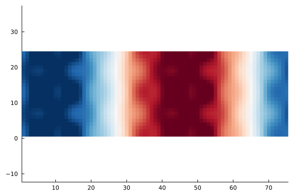
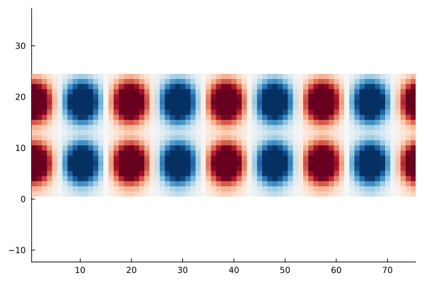

Analysing SCF convergence


The goal of this example is to explain the differing convergence behaviour of SCF algorithms depending on the choice of the mixing. For this we look at the eigenpairs of the Jacobian governing the SCF convergence, that is
\[1 - α P^{-1} \varepsilon^\dagger \qquad \text{with} \qquad \varepsilon^\dagger = (1-\chi_0 K).\]
where $α$ is the damping $P^{-1}$ is the mixing preconditioner (e.g. KerkerMixing, LdosMixing) and $\varepsilon^\dagger$ is the dielectric operator.
We thus investigate the largest and smallest eigenvalues of $(P^{-1} \varepsilon^\dagger)$ and $\varepsilon^\dagger$. The ratio of largest to smallest eigenvalue of this operator is the condition number
\[\kappa = \frac{\lambda_\text{max}}{\lambda_\text{min}},\]
which can be related to the rate of convergence of the SCF. The smaller the condition number, the faster the convergence. For more details on SCF methods, see Self-consistent field methods.
For our investigation we consider a crude aluminium setup:
using AtomsBuilder
using DFTK
system_Al = bulk(:Al; cubic=true) * (4, 1, 1)FlexibleSystem(Al₁₆, periodicity = TTT):
cell_vectors : [ 16.2 0 0;
0 4.05 0;
0 0 4.05]u"Å"
and we discretise:
using PseudoPotentialData
pseudopotentials = PseudoFamily("dojo.nc.sr.lda.v0_4_1.standard.upf")
model_Al = model_DFT(system_Al; functionals=LDA(), temperature=1e-3,
symmetries=false, pseudopotentials)
basis_Al = PlaneWaveBasis(model_Al; Ecut=7, kgrid=[1, 1, 1]);On aluminium (a metal) already for moderate system sizes (like the 8 layers we consider here) the convergence without mixing / preconditioner is slow:
# Note: DFTK uses the self-adapting LdosMixing() by default, so to truly disable
# any preconditioning, we need to supply `mixing=SimpleMixing()` explicitly.
scfres_Al = self_consistent_field(basis_Al; tol=1e-12, mixing=SimpleMixing());n Energy log10(ΔE) log10(Δρ) Diag Δtime
--- --------------- --------- --------- ---- ------
1 -36.73214008734 -0.88 13.0 358ms
2 -36.56623244875 + -0.78 -1.31 1.0 88.6ms
3 +38.65682222718 + 1.88 -0.12 9.0 245ms
4 -35.97341873149 1.87 -0.80 8.0 251ms
5 -36.55397293769 -0.24 -1.09 4.0 175ms
6 -35.88778172038 + -0.18 -1.10 4.0 146ms
7 -36.39294023014 -0.30 -1.28 3.0 144ms
8 -36.73779273871 -0.46 -1.81 3.0 122ms
9 -36.73993194519 -2.67 -1.97 2.0 116ms
10 -36.74116512866 -2.91 -2.04 2.0 104ms
11 -36.74138319932 -3.66 -2.32 1.0 92.0ms
12 -36.74217212544 -3.10 -2.52 1.0 98.2ms
13 -36.74201854488 + -3.81 -2.56 2.0 126ms
14 -36.74227106113 -3.60 -2.73 2.0 113ms
15 -36.73732403573 + -2.31 -2.21 3.0 144ms
16 -36.74224919550 -2.31 -2.78 3.0 138ms
17 -36.74241926951 -3.77 -3.16 1.0 94.0ms
18 -36.74242711677 -5.11 -3.08 3.0 147ms
19 -36.74238298230 + -4.36 -3.07 3.0 123ms
20 -36.74248027841 -4.01 -4.02 3.0 118ms
21 -36.74247239298 + -5.10 -3.46 3.0 156ms
22 -36.74247926145 -5.16 -3.95 3.0 125ms
23 -36.74248044949 -5.93 -4.10 2.0 113ms
24 -36.74248052466 -7.12 -4.35 2.0 108ms
25 -36.74248061431 -7.05 -4.60 2.0 103ms
26 -36.74248066419 -7.30 -4.68 2.0 126ms
27 -36.74248060250 + -7.21 -4.59 2.0 115ms
28 -36.74248066432 -7.21 -5.03 1.0 93.1ms
29 -36.74248066737 -8.52 -5.09 3.0 127ms
30 -36.74248067091 -8.45 -5.32 1.0 211ms
31 -36.74248066714 + -8.42 -5.09 3.0 135ms
32 -36.74248066615 + -9.00 -5.03 3.0 1.28s
33 -36.74248067219 -8.22 -5.50 2.0 110ms
34 -36.74248067236 -9.76 -5.66 2.0 106ms
35 -36.74248066845 + -8.41 -5.24 3.0 133ms
36 -36.74248067232 -8.41 -5.73 3.0 130ms
37 -36.74248067260 -9.55 -6.00 1.0 94.1ms
38 -36.74248067264 -10.39 -6.06 2.0 108ms
39 -36.74248067262 + -10.74 -6.09 1.0 98.6ms
40 -36.74248067091 + -8.77 -5.41 4.0 183ms
41 -36.74248067267 -8.75 -6.42 3.0 169ms
42 -36.74248067268 -10.97 -6.96 2.0 137ms
43 -36.74248067268 -12.05 -7.40 2.0 137ms
44 -36.74248067268 + -12.18 -7.05 3.0 147ms
45 -36.74248067268 -12.26 -7.21 4.0 167ms
46 -36.74248067268 -12.70 -7.84 2.0 122ms
47 -36.74248067268 -14.15 -7.84 3.0 149ms
48 -36.74248067268 + -13.55 -7.78 3.0 126ms
49 -36.74248067268 -13.37 -8.12 2.0 117ms
50 -36.74248067268 + -Inf -8.62 1.0 104ms
51 -36.74248067268 + -13.85 -8.58 3.0 146ms
52 -36.74248067268 + -Inf -8.07 3.0 148ms
53 -36.74248067268 + -Inf -9.12 4.0 173ms
54 -36.74248067268 -13.85 -9.13 2.0 138ms
55 -36.74248067268 + -13.85 -8.85 2.0 127ms
56 -36.74248067268 + -Inf -9.20 3.0 163ms
57 -36.74248067268 + -Inf -9.77 2.0 114ms
58 -36.74248067268 + -Inf -9.83 3.0 152ms
59 -36.74248067268 + -Inf -9.47 2.0 137ms
60 -36.74248067268 + -Inf -9.80 3.0 143ms
61 -36.74248067268 + -Inf -10.25 3.0 131ms
62 -36.74248067268 + -Inf -10.49 3.0 123ms
63 -36.74248067268 -13.85 -10.62 3.0 140ms
64 -36.74248067268 + -13.67 -10.55 2.0 133ms
65 -36.74248067268 -14.15 -10.83 2.0 136ms
66 -36.74248067268 -14.15 -10.77 2.0 141ms
67 -36.74248067268 + -14.15 -11.17 2.0 118ms
68 -36.74248067268 -14.15 -11.33 3.0 132ms
69 -36.74248067268 + -Inf -11.17 3.0 137ms
70 -36.74248067268 + -14.15 -11.28 2.0 123ms
71 -36.74248067268 + -13.85 -11.78 1.0 98.9ms
72 -36.74248067268 -13.85 -11.17 3.0 161ms
73 -36.74248067268 -14.15 -11.56 4.0 165ms
74 -36.74248067268 + -14.15 -12.12 2.0 132mswhile when using the Kerker preconditioner it is much faster:
scfres_Al = self_consistent_field(basis_Al; tol=1e-12, mixing=KerkerMixing());n Energy log10(ΔE) log10(Δρ) Diag Δtime
--- --------------- --------- --------- ---- ------
1 -36.73048088642 -0.88 11.0 391ms
2 -36.73901788365 -2.07 -1.36 1.0 95.2ms
3 -36.73710793830 + -2.72 -1.53 3.0 141ms
4 -36.74216642658 -2.30 -2.22 1.0 95.2ms
5 -36.74225014896 -4.08 -2.38 5.0 151ms
6 -36.74241952285 -3.77 -2.48 2.0 114ms
7 -36.74244493315 -4.59 -3.02 1.0 101ms
8 -36.74247349675 -4.54 -3.08 3.0 144ms
9 -36.74247772767 -5.37 -3.48 1.0 103ms
10 -36.74247990069 -5.66 -3.86 5.0 129ms
11 -36.74248028790 -6.41 -4.11 2.0 145ms
12 -36.74248064557 -6.45 -4.39 2.0 107ms
13 -36.74248067085 -7.60 -5.00 2.0 118ms
14 -36.74248067053 + -9.50 -5.11 4.0 164ms
15 -36.74248067256 -8.69 -5.29 1.0 105ms
16 -36.74248067261 -10.31 -5.72 3.0 126ms
17 -36.74248067268 -10.20 -6.21 3.0 118ms
18 -36.74248067268 -11.60 -6.43 6.0 162ms
19 -36.74248067268 -11.63 -6.58 2.0 119ms
20 -36.74248067268 -12.04 -6.79 1.0 99.3ms
21 -36.74248067268 -12.30 -7.06 2.0 143ms
22 -36.74248067268 -12.83 -7.47 1.0 100ms
23 -36.74248067268 -13.67 -7.77 3.0 143ms
24 -36.74248067268 + -Inf -8.10 1.0 100ms
25 -36.74248067268 + -14.15 -8.37 4.0 159ms
26 -36.74248067268 -13.67 -8.59 2.0 112ms
27 -36.74248067268 + -14.15 -8.84 4.0 133ms
28 -36.74248067268 + -13.85 -9.31 3.0 153ms
29 -36.74248067268 + -14.15 -9.77 2.0 108ms
30 -36.74248067268 -13.85 -9.88 3.0 150ms
31 -36.74248067268 -14.15 -10.23 2.0 106ms
32 -36.74248067268 + -14.15 -10.62 3.0 140ms
33 -36.74248067268 + -Inf -10.85 3.0 144ms
34 -36.74248067268 + -Inf -11.19 2.0 113ms
35 -36.74248067268 + -Inf -11.40 2.0 137ms
36 -36.74248067268 -14.15 -11.87 2.0 114ms
37 -36.74248067268 + -14.15 -12.15 3.0 135msGiven this scfres_Al we construct functions representing $\varepsilon^\dagger$ and $P^{-1}$:
# Function, which applies P^{-1} for the case of KerkerMixing
Pinv_Kerker(δρ) = DFTK.mix_density(KerkerMixing(), basis_Al, δρ)
# Function which applies ε† = 1 - χ0 K
function epsilon(δρ)
δV = apply_kernel(basis_Al, δρ; ρ=scfres_Al.ρ)
χ0δV = apply_χ0(scfres_Al, δV).δρ
δρ - χ0δV
endepsilon (generic function with 1 method)With these functions available we can now compute the desired eigenvalues. For simplicity we only consider the first few largest ones.
using KrylovKit
λ_Simple, X_Simple = eigsolve(epsilon, randn(size(scfres_Al.ρ)), 3, :LM;
tol=1e-3, eager=true, verbosity=2)
λ_Simple_max = maximum(real.(λ_Simple))44.02448898050538The smallest eigenvalue is a bit more tricky to obtain, so we will just assume
λ_Simple_min = 0.9520.952This makes the condition number around 30:
cond_Simple = λ_Simple_max / λ_Simple_min46.24421111397624This does not sound large compared to the condition numbers you might know from linear systems.
However, this is sufficient to cause a notable slowdown, which would be even more pronounced if we did not use Anderson, since we also would need to drastically reduce the damping (try it!).
Having computed the eigenvalues of the dielectric matrix we can now also look at the eigenmodes, which are responsible for the bad convergence behaviour. The largest eigenmode for example:
using Statistics
using Plots
mode_xy = mean(real.(X_Simple[1]), dims=3)[:, :, 1, 1] # Average along z axis
heatmap(mode_xy', c=:RdBu_11, aspect_ratio=1, grid=false,
legend=false, clim=(-0.006, 0.006))
This mode can be physically interpreted as the reason why this SCF converges slowly. For example in this case it displays a displacement of electron density from the centre to the extremal parts of the unit cell. This phenomenon is called charge-sloshing.
We repeat the exercise for the Kerker-preconditioned dielectric operator:
λ_Kerker, X_Kerker = eigsolve(Pinv_Kerker ∘ epsilon,
randn(size(scfres_Al.ρ)), 3, :LM;
tol=1e-3, eager=true, verbosity=2)
mode_xy = mean(real.(X_Kerker[1]), dims=3)[:, :, 1, 1] # Average along z axis
heatmap(mode_xy', c=:RdBu_11, aspect_ratio=1, grid=false,
legend=false, clim=(-0.006, 0.006))
Clearly the charge-sloshing mode is no longer dominating.
The largest eigenvalue is now
maximum(real.(λ_Kerker))4.723571187963002Since the smallest eigenvalue in this case remains of similar size (it is now around 0.8), this implies that the conditioning improves noticeably when KerkerMixing is used.
Note: Since LdosMixing requires solving a linear system at each application of $P^{-1}$, determining the eigenvalues of $P^{-1} \varepsilon^\dagger$ is slightly more expensive and thus not shown. The results are similar to KerkerMixing, however.
We could repeat the exercise for an insulating system (e.g. a Helium chain). In this case you would notice that the condition number without mixing is actually smaller than the condition number with Kerker mixing. In other words employing Kerker mixing makes the convergence worse. A closer investigation of the eigenvalues shows that Kerker mixing reduces the smallest eigenvalue of the dielectric operator this time, while keeping the largest value unchanged. Overall the conditioning thus workens.
Takeaways:
- For metals the conditioning of the dielectric matrix increases steeply with system size.
- The Kerker preconditioner tames this and makes SCFs on large metallic systems feasible by keeping the condition number of order 1.
- For insulating systems the best approach is to not use any mixing.
- The ideal mixing strongly depends on the dielectric properties of system which is studied (metal versus insulator versus semiconductor).